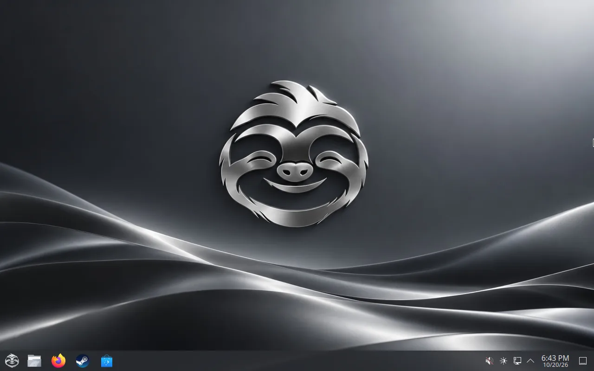
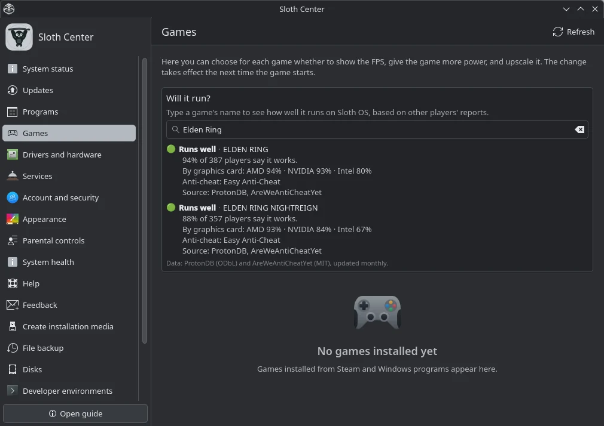
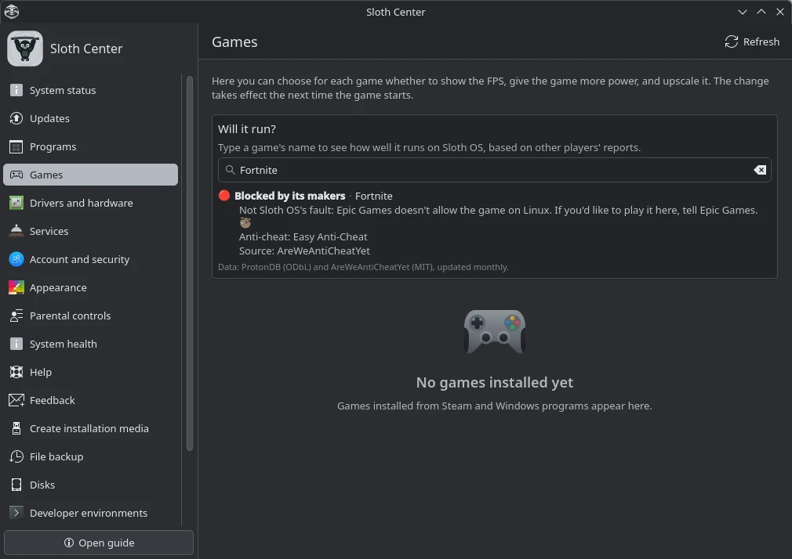
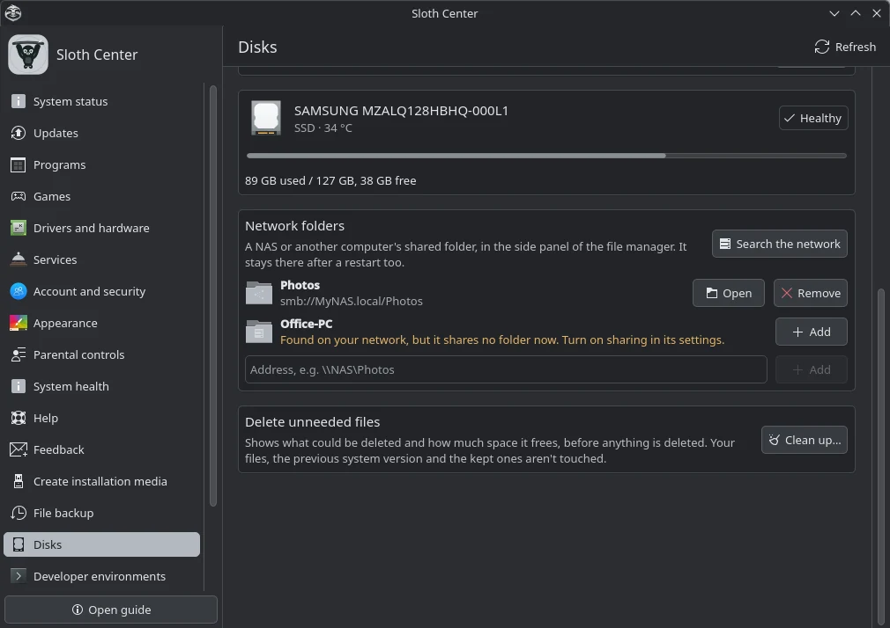
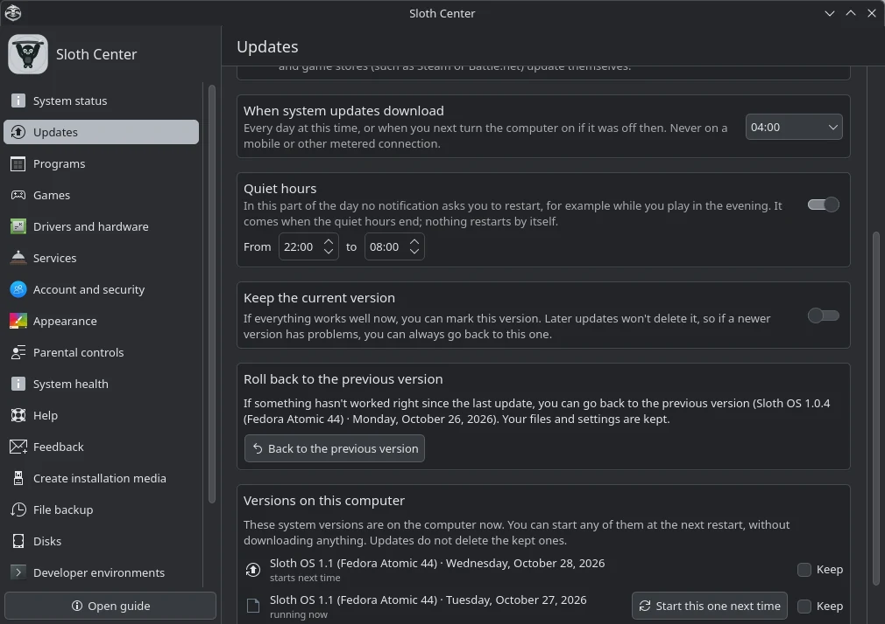
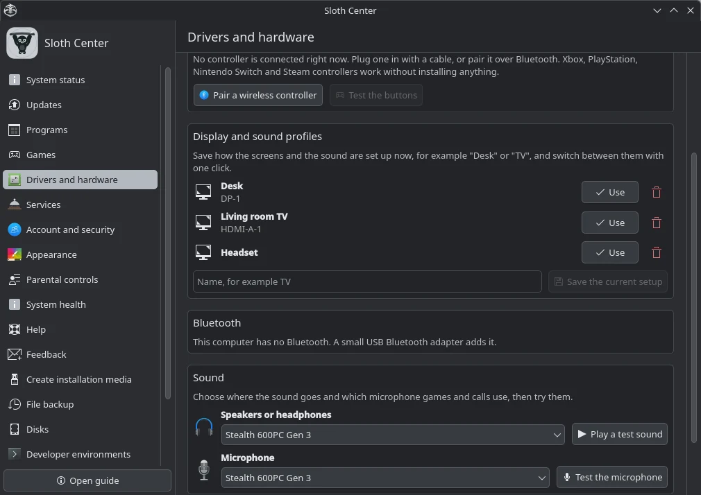
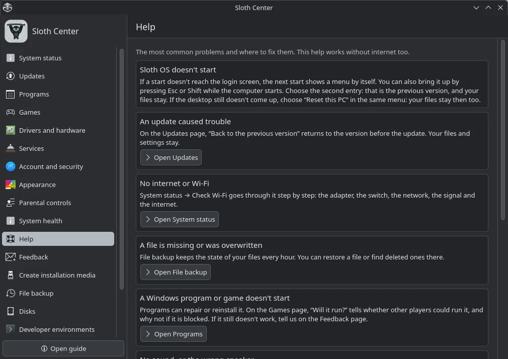
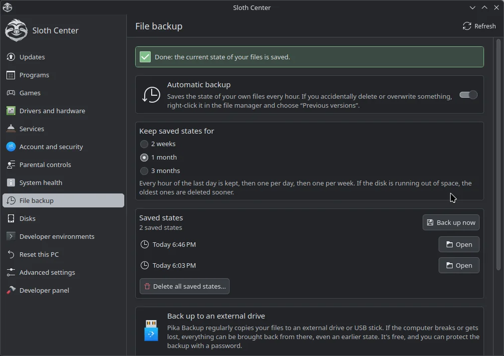
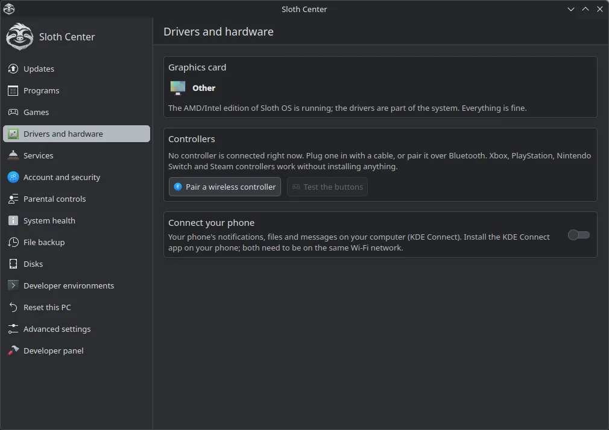
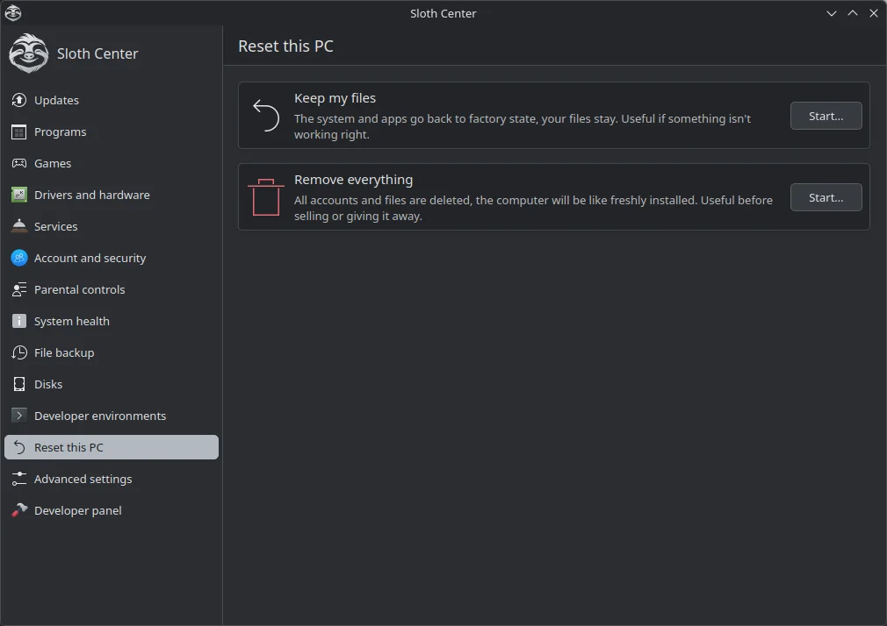

Download the kit
Download the press kit (ZIP, 4 MB)
Logos (SVG and PNG), 12 screenshots (PNG), the default wallpaper (3840×2160) and a fact sheet with the texts below.
Key facts
| Name | Sloth OS (two words, capital S and OS) |
|---|---|
| Current version | 1.2, released October 28, 2026 (release notes) |
| What it is | A free Linux desktop for everyday use and gaming, made for people coming from Windows. No terminal required. |
| Built on | Universal Blue’s Fedora Kinoite image (Fedora Atomic 44) with KDE Plasma |
| Editions | One installer for every PC; computers with an NVIDIA card switch to the NVIDIA edition by themselves |
| Languages | 50 (installer, welcome wizard, Sloth Center) |
| Price | Free. No account, no licence key, no ads. |
| Licence | Code: Apache License 2.0. Artwork (logo, wallpapers, boot animation): CC BY-SA 4.0. |
| Requirements | 64-bit PC in UEFI mode, 4 GB memory (16 GB for games), 64 GB disk. No TPM 2.0 needed. |
| Download | Download page (installer ISO, 5.2 GB) |
| Source code | github.com/Sloth-OS-Linux/sloth-os |
| Made by | ZsLoth, an independent developer |
Descriptions
One line
Sloth OS is a free Linux desktop made for Windows users: familiar from the first minute, ready for games, and no terminal required.
Short (about 50 words)
Sloth OS is a free Linux desktop for people coming from Windows. It looks familiar from the first minute, sets up Steam and the graphics drivers by itself, runs many Windows programs with a double-click, and puts every setting in one window, Sloth Center. It updates quietly in the background and never needs a terminal.
Long (about 150 words)
Sloth OS is a free Linux desktop built for people who know Windows and want a computer that is simply theirs. It is based on Fedora Atomic and KDE Plasma through Universal Blue, so the whole system updates as one signed image in the background, and the previous version is always one click away.
Nothing is preinstalled: a welcome wizard lets you pick your apps and a taskbar that looks like Windows 10, Windows 11, a Mac or Ubuntu. Sloth Center gathers every setting in one window, the way Windows’ Settings does: updates, displays, sound, Bluetooth, Wi-Fi, backups, network folders and “Reset this PC”. For gamers, Steam, Proton and the graphics drivers are set up by themselves, and “Will it run?” tells how well a game runs before you buy it. Windows programs install with a double-click. Updates download only what changed, and every text is available in 50 languages.
What makes it different
- Made for Windows users: a familiar taskbar and Start menu, Windows-like settings, “Reset this PC”, and no terminal for anything, including installing, updating and fixing problems.
- Sloth Center: one window for every setting, with plain-language help that works offline.
- Windows programs without fuss: double-click an .exe, .msi or a disc image; no Steam needed for it.
- “Will it run?”: about 20 000 games rated from other players’ reports, with the anti-cheat and the source of every answer.
- Respectful by default: nothing preinstalled, nothing sent anywhere without consent, 50 languages.
Honest status
Sloth OS is a young, one-person project. Installing on a whole disk or next to Windows, updates and backups are tested on real computers. Windows program support depends on each program, and NVIDIA computers have been tried with Secure Boot turned off.
Logos


Screenshots
Click a screenshot to open the full-size PNG. Also in the ZIP, together with the default wallpaper.























Using the material
The logo, screenshots and wallpaper may be used in articles, videos and reviews about Sloth OS. Please keep the logo’s shape and colors as they are. The artwork is licensed CC BY-SA 4.0; a credit such as “Image: Sloth OS” is welcome.
Contact
Questions or an interview? Open an issue on GitHub. If you made a video or wrote an article, we would love to hear about it there too.